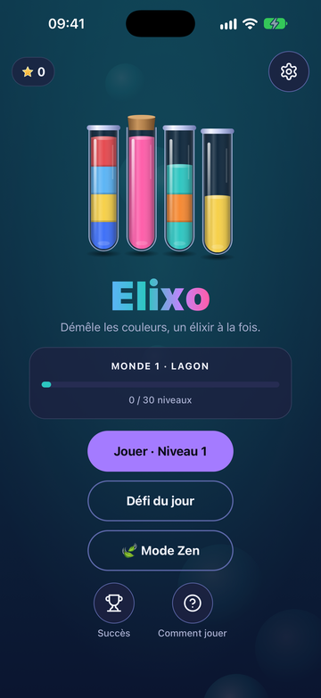
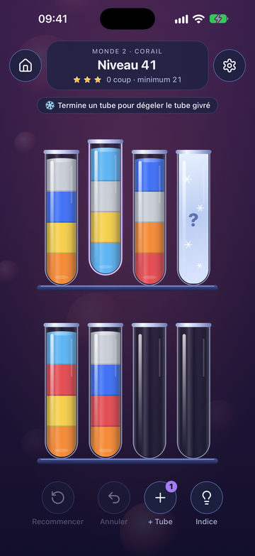

Elixo
Le tri de couleurs tranquille. Démêle les couleurs, un élixir à la fois. Pour iPhone et iPad.


Le jeu
- Touche un tube pour le soulever, puis un autre pour y verser : chaque tube doit finir d'une seule couleur.
- Aucun niveau bloqué derrière une pub ; pas de chrono, pas de vies, pas de pénalité.
- Des milliers de niveaux dans 10 mondes : niveaux boss, tubes givrés, brume qui cache les couleurs.
- Mode Zen, défi du jour, 12 succès, jusqu'à 3 étoiles par niveau.
- Option daltonien, jouable hors ligne, en 6 langues. Aucun compte.
Gratuit grâce à la publicité ; la vidéo « + Tube » ne s'affiche que si tu la choisis. Confidentialité · Assistance
In English
Calm colour sorting, no timer. For iPhone and iPad.
- Tap a tube to lift it, then another to pour into it: every tube must end up a single colour.
- No level locked behind an ad; no timer, no lives, no penalty.
- Thousands of levels across 10 worlds: boss levels, frozen tubes, mist that hides the colours.
- Zen mode, daily challenge, 12 achievements, up to 3 stars per level.
- Colour-blind option, plays offline, in 6 languages. No account.
Free, supported by ads; the "+ Tube" video only plays if you choose it. Privacy · Support